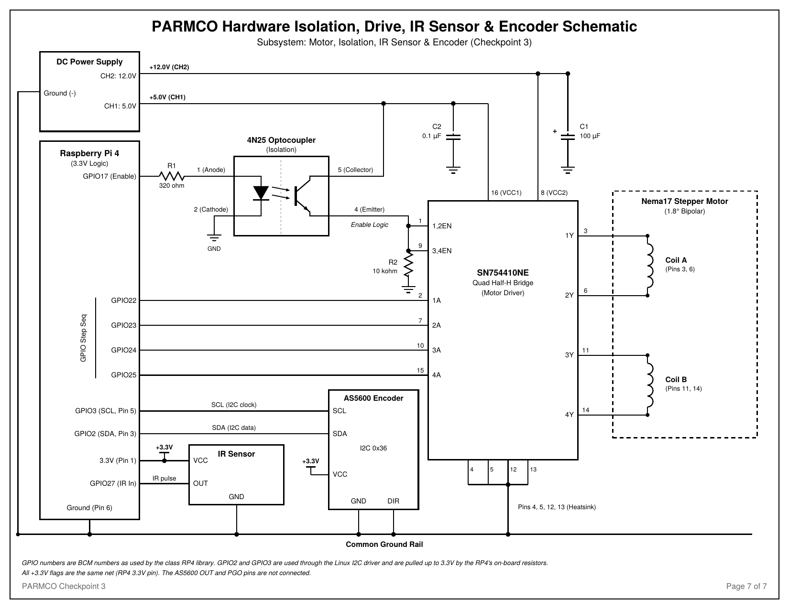

Hardware
The Pi’s 3.3 V logic drives a 12 V stepper through an H-bridge. An optocoupler decides whether the H-bridge is on at all, and an encoder and an IR sensor report back.

Parts list
| Component | Specification |
|---|---|
| Raspberry Pi 4 | 3.3 V logic via Protector HAT; on-board Bluetooth |
| Nema17 stepper motor | XY42STH34-0354A, 1.8° step (bipolar), 12 V, 0.35 A per phase, on the 3D-printed stand |
| SN754410NE | Quad half-H bridge, 1 A per channel; VCC1 5 V logic, VCC2 12 V motor; internal clamp diodes |
| 4N25 optocoupler | NPN phototransistor, 6-pin DIP; pin 3 NC, pin 6 unconnected |
| R1 | 320 ohm, limits the 4N25 LED current to about 6.6 mA |
| R2 | 10 kohm pull-down from the 4N25 emitter to ground |
| C1 | 100 µF on the 12 V rail, polarized |
| C2 | 0.1 µF on the 5 V rail |
| IR sensor module | Digital output, high while a blade is detected; powered from the Pi 3.3 V pin |
| AS5600 module and magnet | 12-bit angle over I2C at address 0x36; DIR tied to ground; diametrically magnetized magnet on the shaft |
| DC power supply | CH1 5 V (0.2 A) for VCC1, CH2 12 V (1 A) for VCC2 |
| Propeller | Two blades, one marked as the reference blade |
Pin assignments
| Signal | BCM GPIO | Header pin | Goes to |
|---|---|---|---|
| Motor enable | GPIO17 | 11 | 4N25 pin 1 through R1 |
| Coil inputs 1A, 2A, 3A, 4A | GPIO22, 23, 24, 25 | 15, 16, 18, 22 | SN754410NE pins 2, 7, 10, 15 |
| IR pulse | GPIO27 | 13 | IR sensor OUT |
| I2C data | GPIO2 | 3 | AS5600 SDA |
| I2C clock | GPIO3 | 5 | AS5600 SCL |
| 3.3 V | 1 | IR sensor VCC, AS5600 VCC | |
| Ground | 6 | Common ground rail |
VCC1 and VCC2 come from the lab supply and never from the Pi. The 4N25 collector sits on the 5 V rail, its emitter feeds both enable pins (1 and 9) of the SN754410NE, and the coils connect to pins 3 and 6 (coil A) and 11 and 14 (coil B).
How it works
Quiet start
The SN754410NE only drives current while its enable pins are high. Those pins are fed by the 4N25 phototransistor and held low by R2. While the Pi boots, GPIO17 floats or sits low, so the LED is off, the phototransistor is open, and no coil current flows whatever the 12 V rail is doing. When the program raises GPIO17, about 6.6 mA lights the LED, the transistor conducts, and the enables rise to roughly 5 V. The enable is on or off only and is never PWM’d. The grounds are common, so this is optical coupling of the enable signal, not full galvanic isolation.
Driving a bipolar stepper
Each coil sits between the two outputs of one H-bridge. An input driven high pulls its output to 12 V and an input driven low pulls it to ground, so 1A high with 2A low pushes current one way through coil A, the opposite inputs push it the other way, and equal inputs give no current. The program steps through an 8-entry half-step table, one entry per half step: 0x08, 0x0C, 0x04, 0x06, 0x02, 0x03, 0x01, 0x09. Bit 3 of each byte drives 1A, bit 2 drives 2A, bit 1 drives 3A and bit 0 drives 4A.
Speed
RPM is steps per second times 60 divided by 400, so the default 20 RPM is 133.3 steps per second and 100 RPM is 666.7, or 1.5 ms between steps.
Power and decoupling
One energized coil draws about 0.3 to 0.35 A and two draw about 0.6 to 0.7 A, inside the 1 A supply channel and the driver’s 1 A rating. C1 supplies the brief surges when coils switch, and C2 bypasses switching noise at the logic supply pin.
IR sensor
The IR sensor runs from 3.3 V so its output is safe for the Pi. The software polls GPIO27 every millisecond and counts a low-to-high change as one blade. With two blades, RPM is 30 divided by the seconds between pulses.
AS5600 encoder
The AS5600 senses the direction of the shaft magnet and reports a 12-bit angle, 0.0879° per count, about ten counts per half step. It is powered from 3.3 V so SDA and SCL stay at levels the Pi’s I2C pins accept, and the Pi’s on-board 1.8 kohm pull-ups serve the bus. Tying DIR to ground makes the angle increase when the magnet turns clockwise. The reading is relative to how the magnet sits on the shaft, so the software stores a zero offset when calibrate zero is pressed.
Bring-up
- Build the circuit with the supply off and the Pi unplugged, then check ground continuity, that VCC1 and VCC2 come only from the supply, and the polarity of C1.
- Turn the supply on with the Pi unplugged. VCC2 current must stay below 0.05 A and the shaft must turn freely.
- Boot the Pi and watch the shaft and current: no movement, current still below 0.05 A.
- Enable I2C, confirm the AS5600 answers at 0x36, and turn the propeller by hand with the motor disabled. The encoder angle should increase when it turns clockwise.
- Enable the motor from the app and check that the current rises and the shaft holds. Run a revolution each way, then compare the IR and encoder RPM with the commanded RPM.
- Disable the motor, shut down the Pi, then switch off the supply.
Wear eye protection whenever the propeller is turning.